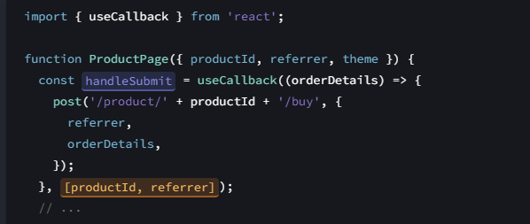
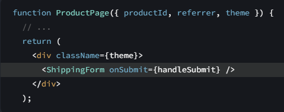
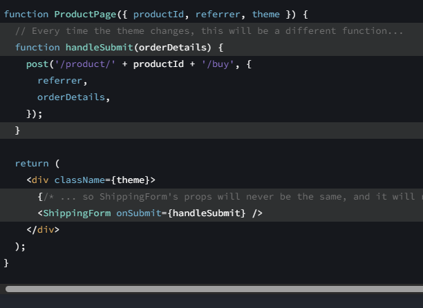
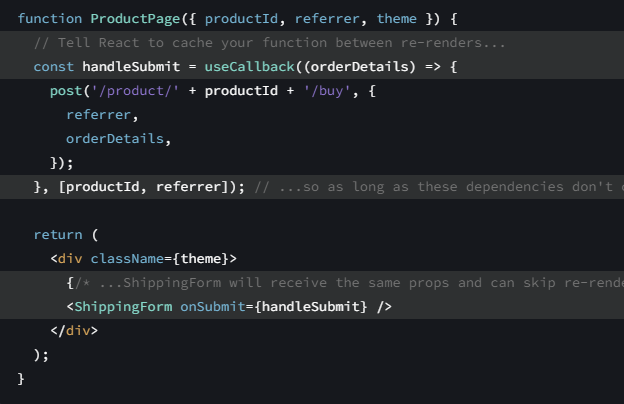

useCallbacké um React Hook que permite armazenar em cache uma definição de função entre re-renderizações; Ele é usado para otimização dos componentes, E é recomendado para carregamentos de componentes mais pesados
Chame useCallbackno nível superior do seu componente para armazenar em cache uma definição de função entre re-renderizações:
Na renderização inicial, useCallbackretorna a fnfunção que você passou.
Durante as renderizações subsequentes, ele retornará uma fn função já armazenada da última renderização (se as
dependências não tiverem mudado) ou retornará a fnfunção que você passou durante esta renderização.
Ao otimizar o desempenho de renderização, às vezes será necessário armazenar em cache as funções que você passa para os componentes filhos. Vamos primeiro dar uma olhada na sintaxe de como fazer isso e depois ver em quais casos isso é útil. Para armazenar em cache uma função entre re-renderizações do seu componente, coloque sua definição no useCallbackHook: 
Você precisa passar duas coisas para useCallback:
Na renderização inicial, a função retornada que você obterá useCallbackserá a função que você passou.
Nas renderizações a seguir, o React comparará as dependências com as dependências que você passou durante a renderização anterior. Se nenhuma das dependências tiver sido alterada (em comparação com Object.is), useCallbackretornará a mesma função de antes. Caso contrário, useCallbackretornará a função que você passou nesta renderização.
Em outras palavras, useCallbackarmazena em cache uma função entre re-renderizações até que suas dependências sejam alteradas. Vejamos um exemplo para ver quando isso é útil. Digamos que você esteja passando uma handleSubmitfunção do ProductPagepara o ShippingFormcomponente: 
Você notou que alternar o themesuporte congela o aplicativo por um momento, mas se você removê-lo
Por padrão, quando um componente é renderizado novamente, o React renderiza novamente todos os seus filhos recursivamente. É por isso que, quando ProductPageé renderizado novamente com um theme, o ShippingFormcomponente também é renderizado novamente. Isso é adequado para componentes que não exigem muitos cálculos para serem renderizados novamente. Mas se você verificou que uma nova renderização está lenta, você pode ShippingFormpular a nova renderização quando seus adereços forem os mesmos da última renderização, agrupando-os em memo:
Com esta mudança, ShippingFormpulará a nova renderização se todos os seus adereços forem iguais aos da última renderização. É aí que o cache de uma função se torna importante! Digamos que você definiu handleSubmitsem useCallback: 
Em JavaScript, um function () {}ou () => {}sempre cria uma função diferente , semelhante a como o {}objeto literal sempre cria um novo objeto. Normalmente, isso não seria um problema, mas significa que ShippingFormos adereços nunca mais serão os mesmos e sua memootimização não funcionará. É aqui useCallbackque é útil: 
Ao envolver handleSubmit, useCallbackvocê garante que seja a mesma função entre as novas renderizações (até que as dependências mudem). Você não precisa agrupar uma função, useCallbacka menos que faça isso por algum motivo específico. Neste exemplo, o motivo é que você o passa para um componente encapsulado em memo, e isso permite que ele pule a nova renderização. Existem outros motivos pelos quais você pode precisar useCallback, descritos mais adiante nesta página.